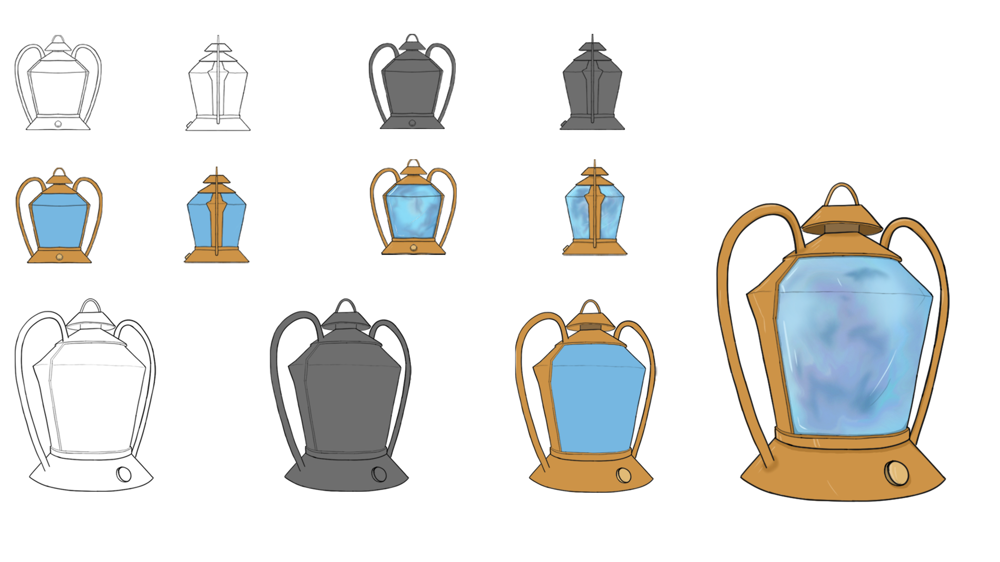
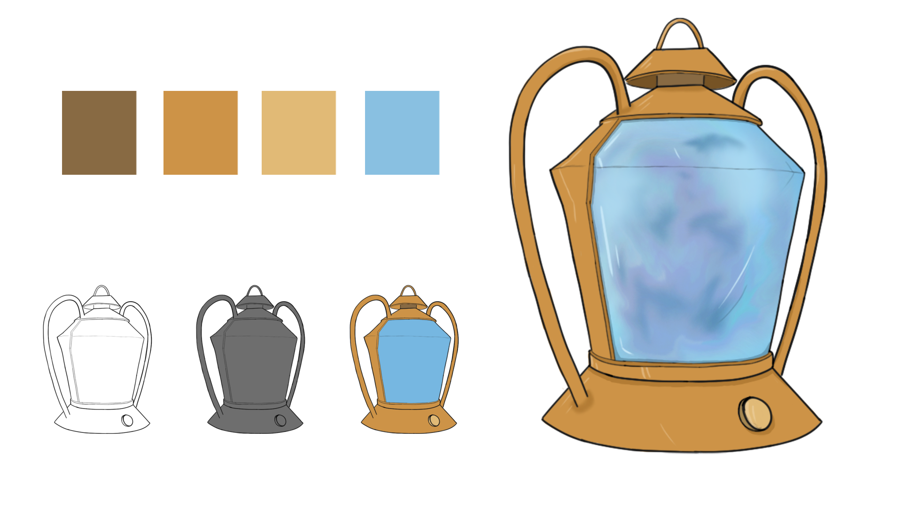

Prince
Project Summary
I created a cartoon-style lantern concept as a blueprint for future 3D prop modeling. The design emphasizes exaggerated proportions and playful shapes, capturing a stylized aesthetic suitable for games or animation. By focusing on clear forms and bold outlines, the concept ensures readability from multiple angles. This project served as a foundation for translating 2D designs into 3D assets, bridging concept art and practical modeling workflow.
Software Used
 Photoshop
Photoshop

